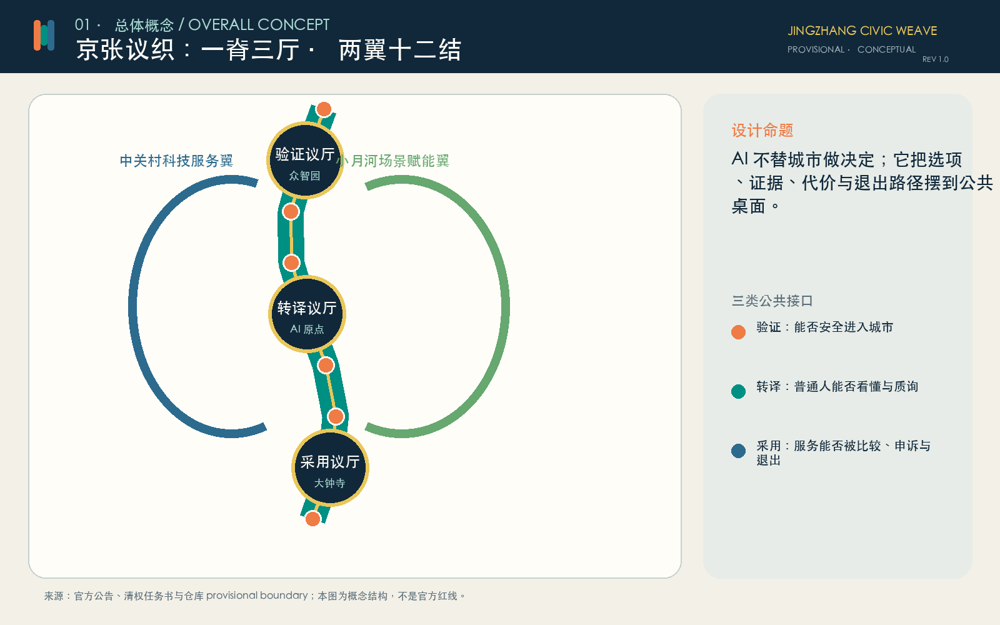
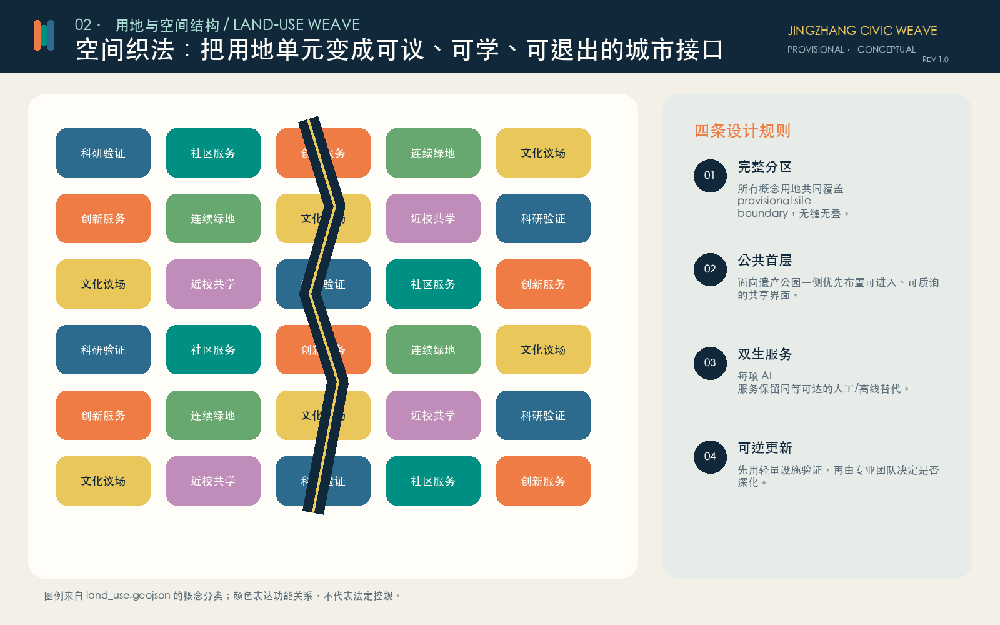
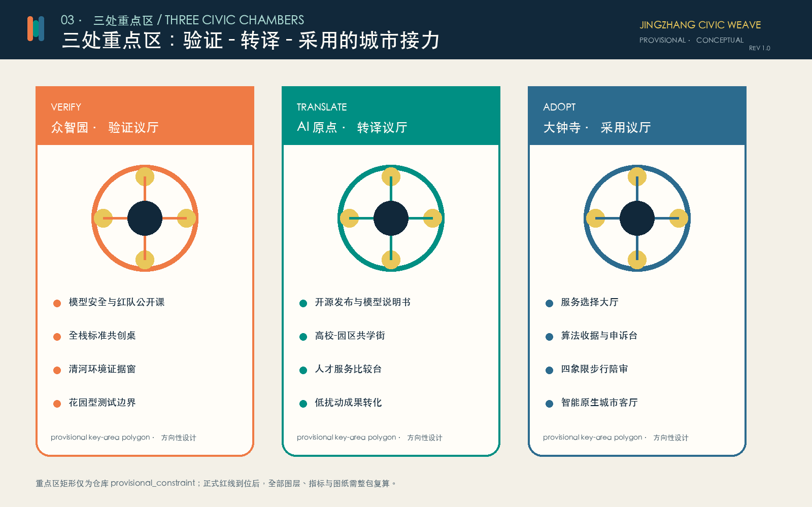
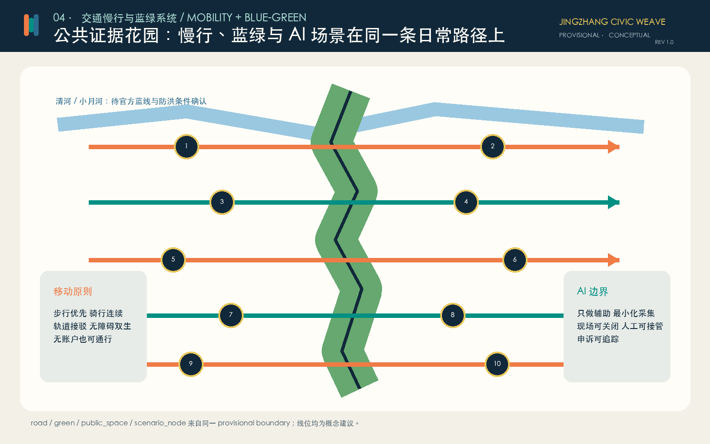
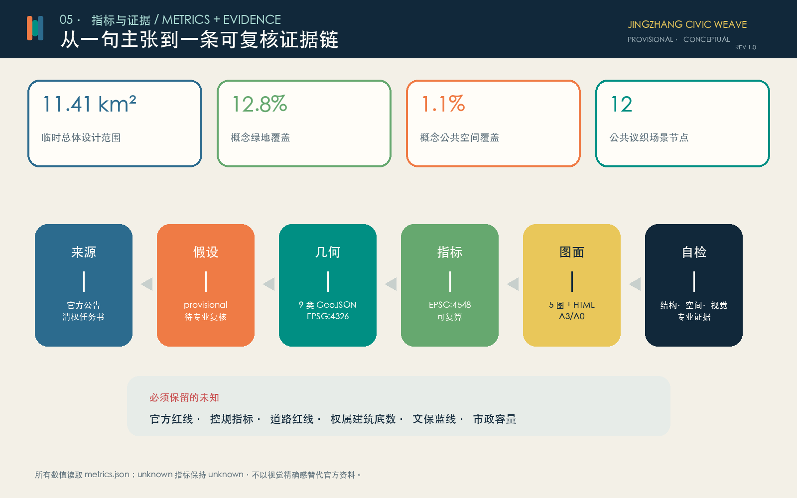

审稿就绪，不等于官方批准

可复算，但不制造虚假确定性
战略研究 - 总体设计 - 重点区深化
43.6 km² 统筹研究
研究 AI 生态、三区两翼、全球协作与未来城市机制；公告面积和文字四至可作任务依据，粗略 polygon 不作红线。
11.4 km² 总体设计
把公共证据主脊、用地织补、慢行蓝绿、建筑参考单元和更新分期组织成可复算概念方案。
368.4 ha 重点区域
众智园验证议厅、AI 原点转译议厅、大钟寺采用议厅分别回应研发安全、开源转化与城市采用。

三座议厅，完成从技术到日常的接力

公共首层、可逆更新、双生服务
用地分区完整覆盖 provisional boundary。建筑仅为概念性参考基底，拆改留、建筑高度、开发强度与权属结论保持待确认。任何 AI 服务都必须提供同等可达的人工或离线替代。
把质询、学习和申诉放在日常路径上

十二个公共问题，不是十二件炫技装置
模型安全红队公开课
在众智园以公开任务、隔离数据和专业主持验证模型风险。
边界：自愿进入、最小化采集、人工复核、可申诉、可退出。
标准共创桌
把标准草案、异议与证据并列展示，记录未决问题。
边界：自愿进入、最小化采集、人工复核、可申诉、可退出。
清河环境证据窗
以公开环境数据辅助解释变化，不替代生态与防洪专业判断。
边界：自愿进入、最小化采集、人工复核、可申诉、可退出。
开源发布议场
高校与社区发布可复现成果，并附模型说明书与撤回机制。
边界：自愿进入、最小化采集、人工复核、可申诉、可退出。
成果转译门诊
把研究成果翻译成普通人可问、可拒绝、可复核的服务说明。
边界：自愿进入、最小化采集、人工复核、可申诉、可退出。
AI教育共学桌
教师、学生与家长共同评议AI教学辅助，保留非AI路径。
边界：自愿进入、最小化采集、人工复核、可申诉、可退出。
城市服务比较台
并列比较AI与人工服务的时间、成本、风险和申诉路径。
边界：自愿进入、最小化采集、人工复核、可申诉、可退出。
无障碍路线陪审
由残障使用者主持路线体验，AI只做建议与记录。
边界：自愿进入、最小化采集、人工复核、可申诉、可退出。
算法收据驿站
为每次公共AI服务提供用途、数据、责任与退出说明。
边界：自愿进入、最小化采集、人工复核、可申诉、可退出。
大钟寺选择大厅
在采用前公开体验不同方案，拒绝默认绑定。
边界：自愿进入、最小化采集、人工复核、可申诉、可退出。
夜间活力守望
只使用聚合环境信号辅助运营，人类负责安全判断。
边界：自愿进入、最小化采集、人工复核、可申诉、可退出。
百年贡献索引
记录可验证贡献与失败教训，不做个人信用评分。
边界：自愿进入、最小化采集、人工复核、可申诉、可退出。
先织接口，再织协作，最后形成长期网络
| 阶段 | 概念项目 | 放行条件 |
|---|---|---|
| 近期 | 算法收据、模型说明书、公共议桌、无障碍走查 | 现场核查、运营主体、人类接管与非数字替代 |
| 中期 | 三座议厅、东西慢行缝合、公共证据花园 | 官方边界、文保蓝绿、道路与权属条件 |
| 长期 | 全球城市AI议会周、开放基准库、贡献索引 | 社区治理、许可、持续资金与年度独立评估 |
公告任务与 agent.1-agent.6 全部进入证据链
命名与视觉识别、6个全球案例、12张场景卡、6类用户画像、4处朝圣/荣誉节点、文化叙事、年度活动与长期运营均在 proposal.md、矩阵、图层、A3/A0 与本页互相引用。

结构化、自检、再由人判断
来源
官方公告、清权任务书、官方标准与 provisional registry 分层使用。
假设
边界、控规、道路、建筑、文保、市政、公共服务底数均显式保留缺口。
自检状态
确定性校验、空间审查、视觉包装和专业证据审查由本地脚本复核；PASS 仅代表可进入内容评审。